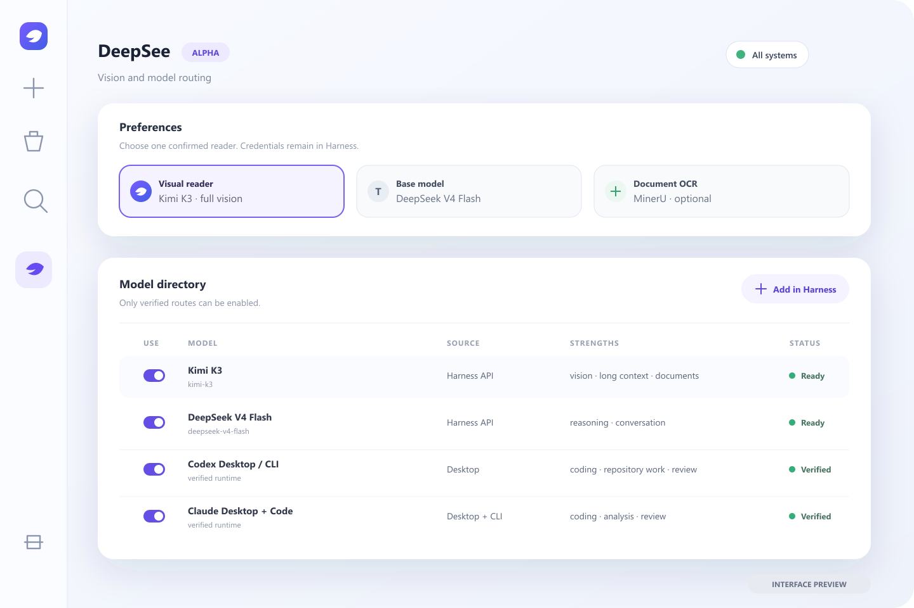

DEEPSEEK HARNESS · PLUGIN GROUP
Give DeepSeek
the right eyes.
One install. Verified vision. Model routing that stays inside Harness.
$ npx --yes github:WUBING2023/deepsee install
STYLEFRAME 01 · INSTALL
THE INTERFACE YOU ALREADY KNOW
See with a model.
Or read with OCR.
DeepSee verifies the route, then hands the observation back to your main model.
- Vision model
- MinerU · PaddleOCR · RapidOCR
- No duplicate API keys

STYLEFRAME 02 · VISION
ONE PLAN · THE RIGHT EXECUTORS
Route by strength.
Keep the trace.
Workflow completeposter.png · report.md · review PASS
STYLEFRAME 03 · WORKFLOW